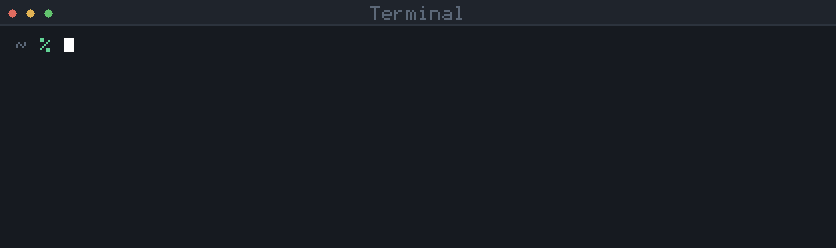
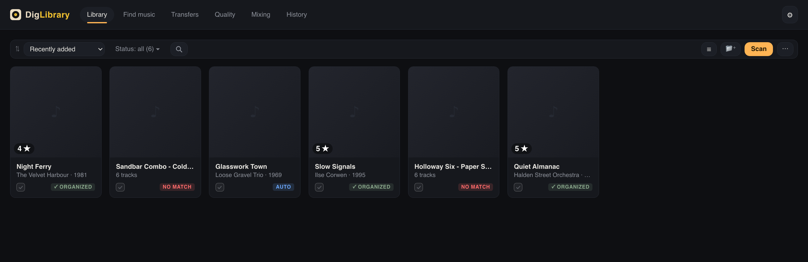
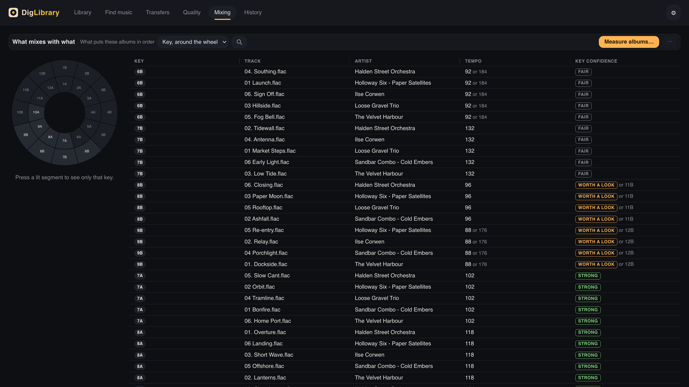

Free · open source · macOS
Sort out your library before Rekordbox inherits it.
Or simply keep it organised and up to date, always. Your files came from a hundred places and it shows: DigLibrary reads your folders, works out what every album actually is, and hands you one plan for the whole batch — folder names, file names, tags and cover art, in the shape you decide.
Nothing on your disk changes until you approve it, and everything it writes can be undone.
What you have
- (2001) loose gravel trio - glasswork town [FLAC]/
- 01 - track01.flac
- 02 - track02.flac
- …and 11 more
- night ferry/
- a1.flac
- a2.flac
- various - tidewater sessions 1995 FLAC/
- 01.flac
What the plan writes
- Loose Gravel Trio - Glasswork Town (1969) [FLAC]/
- 01. Market Steps.flac
- 02. Blue Casement.flac
- …and 11 more
- The Velvet Harbour - Night Ferry (1981) [FLAC]/
- 01. Dockside.flac
- 02. Lanterns.flac
- VA - Tidewater Sessions (1995) [Lossy]/
- 01. Ilse Corwen - Launch.flac
brew install python ffmpeg pipx && pipx ensurepathpipx install diglibrarydiglibrary

macOS 12 or later. Close the Terminal and open it again after the first line. The first time it opens, it offers to put itself in your Applications folder — after that you never need the Terminal again. Full walkthrough, step by step →
Four things, and it asks before it writes a single byte
Built for a library rather than for a file: a hundred albums are one gesture, not a hundred. The Quality screen is what nothing else here does — but the reason to run it is the first card.
Your standard, applied to everything
Six naming styles, or write your own template. Folder names, file names, tags and cover art move together, so what Rekordbox reads and what your Finder shows finally agree.
Approve a hundred albums in one gesture, or go through them one at a time. Words you typed yourself are kept — a correction you made by hand is never quietly overwritten by a catalogue.
What this album actually is
MusicBrainz and Discogs, and the sound itself through AcoustID when the name says nothing at all. They disagree often, so nothing is taken on one source's word: a third is consulted as a witness, and it can settle which of two catalogue entries describes your pressing — without writing a single character of its own.
When nothing is trusted, the file is left alone and put on a list for you. A name is never invented.
And whether the audio is what it claims
Every other organiser believes the file extension. This one measures where each track's spectrum ends and how sharply it falls off — and then asks a second question no spectrogram can answer: where the audio was cut into frames. An MP3 compresses on a fixed grid, and converting it to FLAC copies that grid along with the sound. Trying all 576 alignments finds it, which reaches even a 320 kbps transcode with no low-pass at all — the file every ceiling-based test lets walk. An album is judged from all of its tracks together, never from a single one, so the MP3 somebody sold you as FLAC is labelled before it reaches your decks.
Key and tempo, measured here
From the audio, on your own machine — nothing uploaded, no service, no account — and shown as Camelot neighbours, so what mixes with what is on the screen instead of in your head. Each key carries how decided the reading was, and names the key it beat where the two came in level.
It will not wreck a library that works
This is the real reason not to run an automatic renamer over years of collecting, so it is answered first rather than in the small print.
Every write, not most of them
Nothing happens until you have read the plan and approved it. Every write is preceded by a reversible backup, and the History screen puts an album back where it was — names, tags and artwork.
A run that fails partway is followed too: what landed is recorded and can be undone like anything else.
There is no DigLibrary server
Not "we don't sell your data" — there is nowhere for it to go. The only addresses this application can reach are the music catalogues themselves, when you ask it to identify something, and Soulseek through your own slskd, if you use that service.
No account, no sign-up, no key shipped inside it. Your library never leaves your Mac, and neither does a list of what is in it.
Nothing is counted about you
No analytics, no telemetry, no crash reporting, no update ping — not disabled by a setting, simply not present. It is one grep over the source, and that is the intended way to check it.
Your DJ software is untouched
DigLibrary never opens your Rekordbox or Serato library. It works on the files themselves, which is what those applications read — so you organise first, and import a collection that is already right.
The window
Six screens. This is the shelf and the mixing bench.


Built with AI. Verify it, don't trust it.
This is said plainly because you would rather know. DigLibrary is written with heavy AI assistance, directed, questioned, corrected and audited by a person at every step — and what it claims can be checked on your own machine.
and deterministic
you can read
with provenance
Every rule in this application was measured before it was accepted — against real libraries, and against a benchmark of known transcodes whose recipe ships with the source, so the quality verdicts can be put to the test.
How to check any of this for yourself →
benchmark/
The encoder arms and the scripts that build, measure and score them. Build the transcodes from audio of your own and read the verdicts.
pytest
Every test is offline and deterministic — clocks, sleeps and HTTP transports are injected. Architecture boundaries are asserted by tests, not by convention.
Provenance
Published from a tagged commit by a workflow with no stored key, and every release carries a signed attestation you can fetch from PyPI.